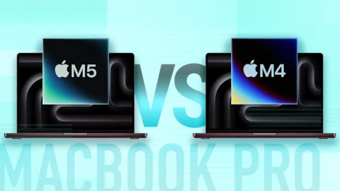

Как выбрать и купить MacBook в 2026 году: сравнение актуальных моделей и процессоров
В 2026 году ноутбуки Apple остаются одним из самых востребованных решений для работы, учебы и творчества. Пользователи ценят их за стабильность, автономность, интеграцию с экосистемой устройств и высокий уровень безопасности. Одновременно с этим растет разнообразие конфигураций, что усложняет выбор подходящей модели.
Покупателю важно ориентироваться не только в названиях линеек, но и в различиях между поколениями процессоров, типами экранов, объемом памяти и возможностями ускорения профессиональных задач. Нередко именно эти параметры определяют комфорт работы в профессиональных приложениях, видеомонтаже или сложных офисных сценариях.
Материал поможет разобраться, чем отличаются актуальные модели, на какие характеристики стоит обращать внимание в 2026 году и как рационально подойти к решению вопроса, где и как купить MacBook с официальной гарантией, удобной оплатой и быстрой доставкой.

Линейка ноутбуков Apple в 2026 году и ключевые сценарии использования
В 2026 году линейка ноутбуков Apple делится на несколько ключевых категорий, охватывающих базовые устройства для повседневных задач и учёбы, универсальные модели для офиса и удалённой работы, а также решения для профессионалов с повышенными требованиями к ресурсоёмким приложениям. Базовые конфигурации ориентированы на пользователей, которые преимущественно работают в браузере, с текстовыми документами, электронными таблицами и презентациями, при этом важными параметрами остаются автономность, малый вес и бесшумность благодаря энергоэффективным чипам Apple Silicon, обеспечивающим стабильную работу при длительных нагрузках без перегрева.
Для офисных сотрудников и специалистов, регулярно участвующих в видеоконференциях, работающих с CRM‑системами, онлайн‑сервисами и облачными документами, оптимальными становятся более производительные варианты, сочетающие увеличенный объём оперативной памяти и быстрый SSD, что ускоряет многозадачность и уменьшает время отклика приложений. Такие ноутбуки комфортно интегрируются в экосистему Apple: синхронизируют почту, заметки и календари с iPhone и iPad, используют iCloud для доступа к файлам с разных устройств и поддерживают быстрое переключение между рабочими сценариями благодаря общим сервисам, что особенно важно при гибридном формате работы.
Отдельное место занимает линейка MacBook Pro, ориентированная на профессиональные нагрузки, включая обработку фото в высоком разрешении, несложный и продвинутый видеомонтаж, рендеринг 3D‑сцен начального и среднего уровня, а также разработку программного обеспечения с использованием виртуальных машин и контейнеров. Такие модели отличаются более мощной графикой, улучшенной системой охлаждения и расширенными возможностями подключения внешних мониторов, поэтому они подходят дизайнерам, видеографам, инженерам и разработчикам, которым важно сочетание производительности и надёжности. Благодаря глубокой интеграции с экосистемой Apple один MacBook может стать центральным рабочим инструментом, объединяющим данные и задачи со всех устройств пользователя.
Чем отличаются MacBook Pro 16 M4 и MacBook Pro 16 M5
MacBook Pro 16 M4 и MacBook Pro 16 M5 относятся к одному профессиональному классу, однако различия в архитектуре чипов заметно отражаются на поведении ноутбука под нагрузкой. В версии MacBook Pro 16 M4 используется конфигурация с меньшим количеством производительных ядер и более скромным графическим блоком, поэтому в задачах, чувствительных к однопоточной скорости и пиковой мощности GPU, MacBook Pro 16 M5 демонстрирует более высокие стабильные частоты без выраженного троттлинга. Это особенно заметно при долгих рендерах и экспорте больших проектов, когда важна не только пиковая, но и продолжительная производительность.
Развитый нейронный блок в MacBook Pro 16 M5 даёт выигрыш в задачах ИИ: ускоряется генерация и апскейл изображений, локальное распознавание речи, работа инструментов на базе машинного обучения в видеоредакторах и графических пакетах, где активно применяются интеллектуальные фильтры. При работе с 4K и начальным 8K‑монтажом, сложной цветокоррекцией, большим количеством слоёв и эффектов более мощный GPU и улучшенная пропускная способность памяти позволяют снижать количество прокси и реже прибегать к снижению качества предпросмотра.
С точки зрения автономности MacBook Pro 16 M5 выигрывает за счёт более эффективных «малых» ядер и доработанного планировщика нагрузки: при компиляции крупных проектов, запуске виртуальных сред и работе с 3D‑сценами он дольше удерживает высокую производительность на батарее. Модель MacBook Pro 16 M4 при этом остаётся рациональным выбором для специалистов, которым нужен профессиональный 16‑дюймовый рабочий инструмент для обработки фотографий, монтажа в 4K и разработки, но которые готовы пожертвовать некоторым запасом мощности ради более доступной цены, тогда как более новый MacBook Pro 16 M5 лучше подходит для долгосрочных проектов с расчётом на рост сложности задач и более активное использование функций ИИ.
Как выбрать конфигурацию и купить MacBook с оптимальными характеристиками
При выборе конфигурации важно сначала определить сценарии использования: для учебы, веба и офисных задач достаточно 8–16 ГБ оперативной памяти и SSD на 256–512 ГБ, однако при работе с большим количеством вкладок, облачными сервисами и мессенджерами разумно сразу смотреть в сторону 16 ГБ и выше, так как память в ноутбуках Apple не подлежит последующему апгрейду. Для дизайнеров и видеомонтажеров минимально комфортным объемом становится 16–24 ГБ, а SSD от 1 ТБ снижает риск быстрого заполнения хранилища медиаконтентом и проектами, причем дополнительный запас особенно важен при работе в поездках, когда внешний диск использовать неудобно.
Специалистам по 3D-графике, цветокоррекции и монтажу в 4K стоит обратить внимание на модели с 16‑дюймовым экраном и расширенным цветовым охватом, где критична поддержка P3 и высокая пиковая яркость, а также частота обновления 120 Гц, заметно повышающая комфорт в интерфейсе и таймлайне. В таком случае логично выбирать конфигурации уровня MacBook Pro 16 M4 или MacBook Pro 16 M5, где дополнительные графические блоки и расширенная память дают задел по производительности на несколько лет, поэтому экономия на базовой версии часто оборачивается более ранней заменой ноутбука и потерей времени при сложных рендерах.
Тем, кому важна максимальная мобильность, но требуется мощность для разработки, анализа данных или виртуальных машин, подойдут более компактные модели MacBook с увеличенным объемом оперативной памяти и SSD, поскольку они обеспечивают баланс веса и ресурса системы. Важно заранее решить, насколько велика потребность в локальном хранении ресурсов проектов, баз данных и образов, так как переход с 512 ГБ на 1–2 ТБ при заказе намного выгоднее, чем постоянная работа с внешними накопителями. Рациональное решение о покупке MacBook опирается на сопоставление бюджета и задач: для офисных пользователей и студентов достаточно базовых процессоров и среднего SSD, тогда как разработчикам, дизайнерам и видеомейкерам оправдана доплата за старшие чипы, больший запас оперативной памяти и более крупный экран, поскольку это напрямую влияет на стабильность работы профессиональных инструментов и скорость выполнения повседневных операций.
Преимущества покупки в A-STORE: гарантия, сервис и доставка по Москве
Покупка ноутбуков Apple в A-STORE ориентирована на пользователей, которым важны официальный статус поставщика, прозрачные условия и последующая поддержка, поэтому все устройства поставляются с действующей российской гарантией производителя и возможностью обращения в авторизованный сервисный центр. При необходимости специалисты организуют диагностику и ремонт с использованием оригинальных комплектующих, что критично для сохранения ресурса аккумулятора, экрана и логической платы, особенно в моделях уровня MacBook Pro. На странице https://store-apple.msk.ru/macbook/ представлены актуальные конфигурации, включая MacBook Pro 16 M4 и MacBook Pro 16 M5, при этом магазин поддерживает безналичный расчёт, оплату банковскими картами, программы рассрочки и предлагает быструю курьерскую доставку по Москве с возможностью отправки в регионы, что позволяет купить MacBook в проверенном месте и снизить риски, характерные для неофициальных площадок и частных продавцов.
Выбор ноутбука Apple в 2026 году напрямую связан с задачами пользователя и пониманием различий между поколениями процессоров и конкретными линейками. Модели начального и среднего уровня подойдут для учебы, работы с документами и повседневного использования, в то время как профессиональные конфигурации рассчитаны на длительные сложные нагрузки и работу со специализированным ПО. Учет автономности, объема памяти и типа хранилища позволяет избежать ограничений в будущем и продлить срок актуальности устройства.
Сравнение MacBook Pro 16 M5 и MacBook Pro 16 M4 показывает, что обновления архитектуры Apple направлены на рост производительности, энергоэффективности и возможностей аппаратных ускорителей. Для части задач разница будет заметна сразу, особенно при работе с видео высокого разрешения, 3D-графикой и искусственным интеллектом. Для других сценариев, связанных с офисной работой и браузером, оба поколения обеспечивают значительный запас мощности на несколько лет вперед, и решающим фактором становятся цена и конфигурация.